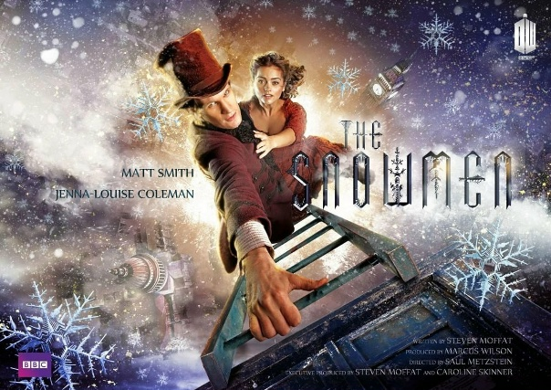

Эра Одиннадцатого Доктора
<<< НАЗАД ||| Снеговики ||| ДАЛЬШЕ >>>
или
<<< НАЗАД к мини-эпизодам
ДАЛЬШЕ >>> к мини-эпизодам
MVO [TVShows], [Кириллица], [Baibako], [ВГТРК] или Original [ENG] Субтитры: Русские {TrueTransLate} или Английские | |
 | |
The Snowmen
рождественский спецвыпуск25 декабря 2012 Формат: 60-минутный эпизод
| Варианты озвучек: | * Разные: смотрите по инструкции чаще всего это шестая серия седьмого сезона или где-то после 13-й |
|---|---|
| Скачивание и просмотр: |
Канун Рождества 1892 года, снег падает как из сказки. Когда сказка становится кошмаром и леденящая кровь опасность угрожает Земле, за помощью к Доктору обращается неординарная молодая гувернантка Клара. Но Доктор затворился в трауре и решил не вмешиваться в проблемы вселенной. Действительно ли Доктор отвернётся от человечества после возвращения старых друзей, или же он будет сражаться, чтобы спасти мир и Рождество — от ледяных лап этой таинственной угрозы?

